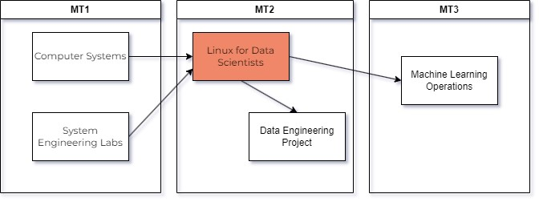
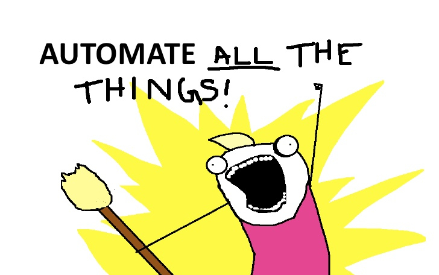

0. Linux for Data Scientists: intro
HOGENT toegepaste informatica
Thomas Parmentier, Andy Van Maele, Bert Van
Vreckem
2023-2024
Lectoren
- Thomas Parmentier (Gent)
- Bert Van Vreckem (titularis, Aalst+VC, TIAO)
Contactinfo - zie verder/studiewijzer
Overzicht gerelateerde vakken

Overzicht gerelateerde
vakken
Linux is overal
… en je kan er gewoon niet meer omheen
- Grootste websites
- webapps draaien meestal op Linux
- ook .Net (meer en meer)!
- MacOS X
- Ook UNIX (BSD)
- Bash-shell + commando’s
- Moderne tools voor software release management
- Continuous Integration/Delivery
- Docker
- Embedded systemen
- Arduino, Raspberry Pi, …
- Multimedia-apparatuur, TV’s, NAS, …

Automate all the things!
- Toolbox voor automatisering
- Filtercommando’s
grep/ag, sed,
awkcurl, jq, pandoc, …- Shell scripts
- Configuration Management Systems (Ansible, …)
Ook in de Windows-wereld
- Azure cloud platform draait >50% Linux VMs
- Microsoft loves Linux!
The ’70’s called, they want their terminal back!
De kracht van de CLI
- Command line interface (CLI) is de sleutel tot
automatisering
- Miljoenen servers beheren gaat niet via GUI
- Ook in Windows ziet men dit nu in (PowerShell)
- CLI Instructies zijn bondiger en makkelijker
reproduceerbaar dan GUI instructies
Waarom Linux for Data Scientists?
- Je hebt niet altijd een commerciële oplossing nodig voor data
processing!
- Linux zit vol krachtige tools waarmee je zelf een oplossing kan
bouwen
- Linux + Docker + Python = basisplatform voor Data Engineers
Topics
- Werken met Virtuele Machines & containers
- Basiskennis Linux server, SSH, software-installatie,
web-/database-serverconfiguratie
- Bash scripting
- Text processing: I/O redirection, filters, web scraping
- Systeembeheertaken plannen
- Automatiseren van gegevensverwerking met Linux tools
Leerdoelen: zie studiewijzer/studiefiche
Leermateriaal op Chamilo
- Leerpad
- Cobbaut (2015) Linux Fundamentals
- Labo-opgave (Github-repo)
Software
- Git client (incl Git Bash)
- Teksteditor, bv. VS Code met (aanbevolen) plugins:
- Remote Development
- ShellCheck
- Oracle VirtualBox + Extension Pack
- Linux Mint als GUI-Linux VM
- Download ova file
- import & get started
Dagonderwijs, virtuele campus
- 3 lesuur / week
- 4 studiepunten
- equivalente hoeveelheid voor- en nawerk thuis
Afstandsleren (TIAO)
- Op eigen tempo, ahv studiemateriaal
- Zie ook Studiewijzer - Studiebegeleiding
Werk- en leeraanwijzingen
Leerpad: per hoofdstuk
- Voorbereiding: vóór het contactmoment
- Achtergrondinfo: interessant, maar geen
leerstof
- Oefeningen met oplossingen: buiten
contactmomenten
- Labo-oefeningen: tijdens/buiten
contactmomenten
Tips voor slagen
- Kom naar de les!
- Lees de studiewijzer!
- Maak de labo’s!
Evaluatie - studiefiche
- 70% Vaardigheidstest binnen examenrooster
- 30% Schriftelijk examen (op PC)
- 40% Scripting-opdracht (op PC)
- 30% Portfolio met mondelinge verdediging
- Opdracht: automatiseren van een data-workflow
Heb je een vraag?
- Stel ze tijdens de contactmomenten
- Stel ze via Teams (cursusintro, rechtertegel)
- Contacteer jouw lector
- Enkel voor persoonlijke/vertrouwelijke zaken!
Planning: zie studiewijzer